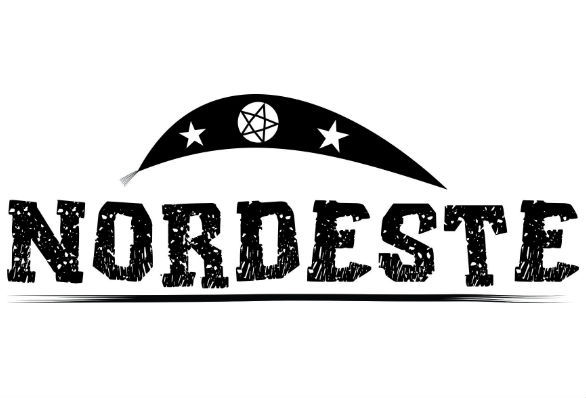

LETRA ***B***
Baitola = Termo pejorativo para homossexual masculino.
Batoré = Indivíduo de baixa estatura, o mesmo que tamborete.
Balaio = Um cesto grande.
Badoque = Estilingue; atiradeira.
Babão = Bajulador; puxa-saco.
Bafafá = Confusão; bagunça; balbúrdia.
Bexiguento = Pessoa sem qualidades; desgramado; gangrenado.
Bixiga-lixa = Qualidade do maloqueiro; agitador; arruaceiro.
Bizonho = Bizarro.
Brenha = Lugar distante; de difícil acesso.
Bacurau = Nome de ave com hábitos noturnos, também serve para se referir a serviços no horário da noite. "Perdi meu ônibus. Agora só o bacurau".
Bestar = Andar sem destino; abestadamente.
Bunda-canastra = Cambalhota.
Boiar = Sobrar.
Bulir = Mexer com alguém, de preferência com alguém que estava quieto.
Butija = Tesouro escondido.
Bigu = Carona.
Boga = Ânus.
Botar galha = Ser infiel em um relacionamento amoroso.
Brebote = Comida de baixo valor nutritivo, normalmente atrativa aos gulosos.
Bregueço = Objeto sem valor; desprezível.
Buliçoso = Aquele que mexe em tudo.
Voltar
Próximo